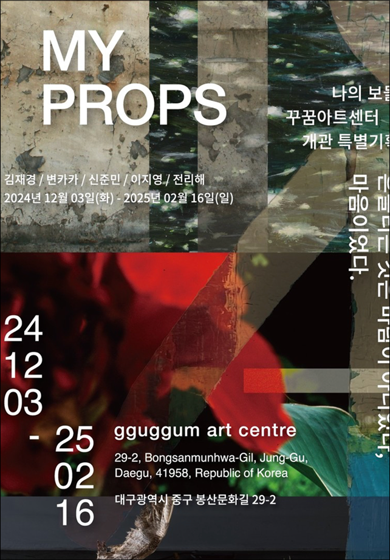

나의 보물 - MY PROPS
흔들리는 것은 바람이 아니었다. 마음이었다.
2024.12.03 ~2025.02.16
개관프리뷰 첫 번째 기획
'나의 보물 - My Props'
흔들리는 것은 바람이 아니었다,
마음이었다.
전시: 2024년 12월 03일 - 2025년 02월 16일.
김재경, 변카카, 신준민, 이지영, 전리해 작가의 회화, 설치, 사진 작품
을 소개한다.
독립적이고 자유로운 동시대 문화예술 공간
꾸꿈아트센터
대구광역시 중구 봉산문화길 29-2
